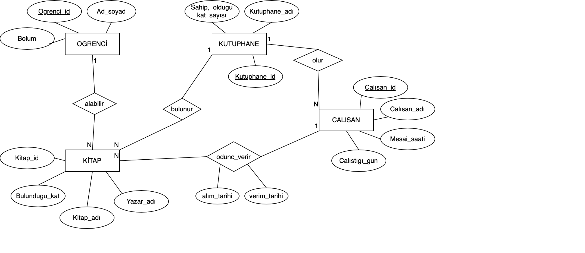

Library Management System
Project Overview
A comprehensive library management system developed as part of the Object-Oriented Software Engineering course. The system aims to prevent confusion in student library transactions and track the number of books in the school library. It includes features for book borrowing, student registration, and automated late return fee calculation.
Key Features
Book Management
Track book borrowing and return periods with automated fee calculation for late returns
Student Registration
Mandatory student registration system with unique student IDs for book borrowing
Library Inventory
Real-time tracking of available books and their locations in the library
Technical Implementation
Development Stack
- Java programming language
- PostgreSQL database
- Eclipse IDE
- Object-Oriented Design Patterns
Database Structure

Entity-Relationship Diagram of the Library Management System
- Student (Ogrenci_id, Ad_soyad, Bolum)
- Book (Kitap_id, Kitap_adi, Yazar_adi, Bulundugu_kat)
- Library (Kutuphane_id, Kutuphane_adi, Sahip_oldugu_kat_sayisi)
- Employee (Calisan_id, Calisan_adi, Mesai_saati, Calistigi_gun)
- Relationships: alabalir, bulunur, odunc_verir, olur
System Architecture
Core Components
- Book borrowing and return tracking
- Student registration system
- Library inventory management
- Late fee calculation system
Design Patterns
- Observer Pattern for real-time updates
- Repository Pattern for data access
- MVC Architecture
- Dependency Injection
Code Implementation
Database Connection
package calisan;
import java.sql.Connection;
import java.sql.DriverManager;
import java.sql.SQLException;
public class DatabaseConnection {
private static final String URL = "jdbc:postgresql://localhost:5433/kutuphane";
private static final String USER = "postgres";
private static final String PASSWORD = "6081";
static {
try {
Class.forName("org.postgresql.Driver");
} catch (ClassNotFoundException e) {
throw new RuntimeException("Failed to load PostgreSQL driver", e);
}
}
public static Connection getConnection() throws SQLException {
return DriverManager.getConnection(URL, USER, PASSWORD);
}
}Observer Pattern Implementation
package calisan;
public interface Observer {
void update(String message);
}
public class ConcreteObserver implements Observer {
private String name;
public ConcreteObserver(String name) {
this.name = name;
}
@Override
public void update(String message) {
System.out.println(name + " received: " + message);
}
public String getName() {
return name;
}
}Project Outcomes
Key Achievements
- Successful implementation of student registration system
- Efficient book tracking and management
- Automated late fee calculation
- Real-time library inventory updates
- Integration with PostgreSQL database
Core Features Implemented
- Book borrowing and return period tracking
- Student registration
- Library book inventory management
Game Platform Database
Project Overview
A comprehensive database system for a game sales platform developed as part of the Database Management Systems course. The system manages user accounts, game libraries, transactions, and community features.
Database Components
User Management
User profiles with ID, username, password, email, and TCKN
Game Management
Game details including ID, name, price, publisher, and release date
Community Features
Community groups with capacity, member count, and membership management
Technical Implementation
Database Structure
- User accounts and authentication system
- Game ownership and library management
- News and announcements system
- Sales platform with transaction tracking
- User inventory management
- Community system with group management
- Digital wallet system
- User ranking system
Key Features
- Multiple game ownership per user
- Publisher news and announcements
- Transaction history tracking
- Multi-group membership support
- Digital wallet with transaction history
- User inventory management
- Flexible user ranking system
Database Tables
Core Tables
- Users: user_id, username, password, email, tckn
- Games: game_id, name, price, publisher, release_date
- Companies: company_id, name, email
- News: news_id, topic, title
- Sales Platform: sale_id, product_name, purchase_date, sale_date
- Communities: community_id, capacity, member_count, membership_number
- Wallet: user_id, wallet_id, balance, card_info, transaction_history
- Inventory: inventory_id, product_name, product_price, product_details
- User Ranks: rank_id, rank_level
Project Outcomes
Achievements
- Successfully implemented all core database functionalities
- Created efficient relationships between tables
- Implemented secure user authentication system
- Developed comprehensive game management system
- Created flexible community management features
Core Features Implemented
- User Management: User ID, username, password, email, national ID
- Game Ownership: Multiple games per user
- Game Details: Game ID, name, price, publisher, release date
- Publisher Management: Company ID, name, email
- News System: News ID, topic, title
- Sales Platform: Sale ID, product name, purchase date, sale date
- Community System: Community ID, capacity, member count, membership number
- Library System: Library ID, user access, game ID, owned games count
- Wallet System: User ID, wallet ID, balance, card info, transaction history
- Inventory System: Inventory ID, product name, product price, product details
- User Ranking System: Rank ID, rank level with multiple ranks per user